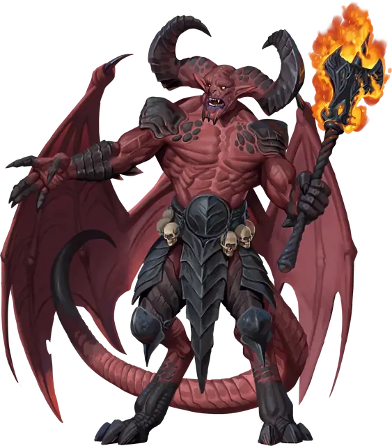

Исчадие преисподней
Pit Fiend
Большое Исчадие (Дьявол), Принципиальное Злое

Класс Защиты 21 Инициатива +14 (24)
Хиты 337 (27к10 + 189)
Скорость 30 футов, Полёта 60 футов
| мод | спас | ||
|---|---|---|---|
| СИЛ | 26 | +8 | +8 |
| ЛОВ | 14 | +2 | +8 |
| ТЕЛ | 24 | +7 | +7 |
| мод | спас | ||
|---|---|---|---|
| ИНТ | 22 | +6 | +6 |
| МДР | 18 | +4 | +10 |
| ХАР | 24 | +7 | +7 |
Сопротивление урону Холод
Иммунитеты Огонь, Яд; Отравленный
Чувства пассивное Восприятие 20, Истинное зрение 120 футов
Языки Инфернальный, Телепатия 120 фт.
Опасность 20 (25 000 опыта; БВ +6)
Особенности
Восстановление дьявола. Когда исчадие умирает за пределами Девяти Преисподних, его тело превращается в сернистое облако и в тот же миг заново возрождается со всеми Хитами где-то в Девяти Преисподних.
Аура страха. Исчадие испускает ауру в 20-футовой Эманации, пока не окажется Недееспособно. Спасбросок Мудрости: Сл 21, любой враг, начинающий свой ход в ауре. Провал: Цель Испугана до начала своего следующего хода. Успех: Цель невосприимчива к Ауре страха этого исчадия преисподней на 24 часа.
Легендарное сопротивление (4/день). Если исчадие проваливает спасбросок, оно вместо этого может в нём преуспеть.
Сопротивление магии. Исчадие совершает с Преимуществом спасброски от заклинаний и прочих магических эффектов.
Действия
Мультиатака. Исчадие совершает одну атаку Укусом, две атаки Дьявольскими когтями и одну атаку Пылающей булавой.
Укус. Бросок рукопашной атаки: +14, досягаемость 10 фт. Попадание: 18 (3к6 + 8) Колющего урона. Если цель — существо, оно должно совершить следующий спасбросок. Спасбросок Телосложения: Сл 21. Провал: Цель Отравлена. Пока цель Отравлена, она не может восстанавливать Хиты, получает 21 (6к6) урона Ядом в начале каждого своего хода и повторяет спасбросок в конце каждого своего хода, оканчивая этот эффект при успехе. Спустя 1 минуту она автоматически преуспевает в спасброске.
Дьявольские когти. Бросок рукопашной атаки: +14, досягаемость 10 фт. Попадание: 26 (4к8 + 8) Некротического урона.
Пылающая булава. Бросок рукопашной атаки: +14, досягаемость 10 фт. Попадание: 22 (4к6 + 8) Силового урона плюс 21 (6к6) урона Огнём.
Сотворение заклинаний адского пламени (Перезарядка 4–6). Исчадие дважды сотворяет Огненный шар (версия 5-го уровня), не нуждаясь в Материальных компонентах (заклинательная характеристика — Харизма, Сл спасброска против заклинаний 21). Оно может заменить одно заклинание Огненный шар на Удержание монстра (версия 7-го уровня) или Огненную стену.
Бонус мастерства +6
Среда обитания Девять преисподних
Сокровища Реликварные
Исчадие преисподней
Дьявол господства
Исчадия преисподней — серые кардиналы и генералы легионов Девяти Преисподних, которые жаждут распространить свою власть на все планы бытия. Однако они не просто разжигают войны: эти тираны плетут паутину интриг, охватывающую войны исчадий, дьявольскую политику и тайные заговоры смертных.
Исчадия преисподней — знать Девяти Преисподних. Многие из них правят собственными вотчинами на Нижних планах, обречёнными мирами смертных и другими опорными пунктами дьяволов. Большинство из них служат архидьяволам и одновременно с этим преследуют собственные цели. Исчадиям преисподней подчиняются полчища младших дьяволов, однако хитрые тираны всегда остаются начеку, ожидая предательства от слуг.
Исчадия преисподней — чистейшее зло Девяти Преисподних, которое вселяет ужас одним лишь своим присутствием. Несмотря на свои размеры и невероятную физическую и магическую мощь они предпочтут развратить душу врага вместо простого убийства. Но, ослеплённые гордыней, исчадия преисподней склонны недооценивать смертных и из-за этого часто проигрывают им.